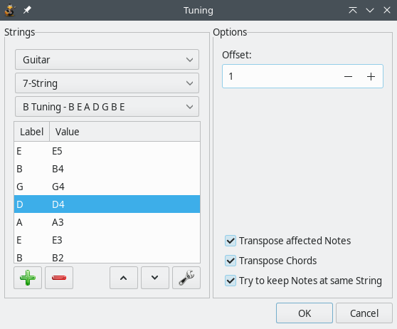

- Getting started
- Making and editing a song
-
Features in detail
- File and edit functions
- View and layout
- Composition and track
- Measure and beat
- Markers and Player
- Tools and settings
Composition and track properties
One more thing before we go on: Prior knowledge of music theory is assumed from now on. There are a couple of links in the Note Duration section which can help you if you don’t know much theory yet, but to cover the actual "musical meaning" of all these options would require an entire manual unto itself. This page will only explain the TuxGuitar-related functionality to avoid any long-winded music theory discussions.
Composition
The Composition pulldown menu and the toolbar section give you a few options for setting the structure and meter of your song.

A time signature must be defined for each song. Usually it is 4/4, but sometimes it has some different value (3/4 for waltz, 7/8, etc.). Time signature applies for all the tracks. It can be changed in the middle of the song - when you change the value, the time signature will be changed from the current cursor position until the end.
Clicking on the icon with the "4/4" graphic or the menu entry Composition → Time Signature will bring up the time signature dialog, which is pretty straight-forward. You have a separate pulldown menu for each half of the time signature, as well as a "To the end" check box. TuxGuitar supports multiple time signature changes throughout the song, and much like tempo changes, they are as easy to create as clicking the 4/4 icon and setting a new time signature in the measure where you wish it to change. Checking the "To the end" box will cause your newly-selected time signature to continue either to the end of the song, or until you manually change the time signature in any of the following measures. Unchecking the "To the end" box will cause the new time signature to span only the measure you add it to, after which it will automatically reset to the time signature used by the previous measure.
Each song also has a Tempo. It indicates how many beats (1/4 notes) the song has in a minute - it is marked in BPM’s - Beats Per Minute. New songs in TuxGuitar default to 120 BPM, but you can set your own tempo to anything between 30-320 BPM. The tempo applies for all the tracks in the song. The tempo set in the first measure will be the default tempo either throughout the song, or until you set another tempo in any of the following measures. When you change the value, tempo will be changed from the current cursor position until the end of the song.
The Clef affects the song display in scores. Clefs are used to mark the specific pitch of the note, so all other notes’ pitch can be determined. Clef is placed on the beginning of the scores. There are three types of clefs supported in TuxGuitar: treble (default), bass, alto and tenor, which are the most usual clefs. Custom clefs are not supported. Clef can be changed in the middle of the song - when it’s changed the scores display changes from that position and further.
The Key Signature affects the way the notes are written in scores. They represent the current scale the song is written in, so there’s no need to constantly write sharp and flat marks. When you choose to change the key signature, a dialog appears with all available key signatures. Natural, for example, represents the C-major, one flat represents F-major, etc.
Triplet Feel (also: shuffle or swung notes) is a rhythmic pattern in which the duration of the first note in a pair is augmented and that of the second is diminished. This effect is often used in jazz/swing and blues music. TuxGuitar triplet feel divides the note par in 2:1 ratio. Triplet 8th divides a pair of 1/8 notes and Triplet 16th divides a pair of 1/16 notes into 2:1 ratio.
Repeats
The next three menu entries are used for repeating control. Everyone familiar with music notation should know these - you can Open and Close Repeat sections. When closing, you will get a dialog to specify how many repeatings should occur. The third entry is used to mark Alternative endings in the repeat. A special dialog will appear, allowing you to choose in which cycle this ending will be played.
Song Properties
Composition → Properties or pressing F5 on your keyboard will bring up your song properties tab, wherein you can set the following most important options and more:

- Name (of song)
- Artist (Performer)
- Album
- Author (Copyright owner)
The reason why these settings are important is that whatever you type in the "Name" and "Author" boxes will show up on the first page of your tabs when you print or export them. So, make sure you set them if you plan viewing these tabs outside of TuxGuitar! The difference can be seen below.

The Track menu
The Track menu is located in the menu bar just as all other menus, but can also be opened by right-clicking on a track in the track list on the bottom of the main window.
Navigating through the tracks
The first four menu entries let you navigate through the track list. But probably it is easier to use the keyboard shortcuts for this: Ctrl+Shift+Up moves to the previous track, Ctrl+Shift+Down to the next track.
Manage Tracks
Add Track or the icon with the "+" sign adds a new, empty track to the end of the track list. Clone Track adds a copy of the selected track to the end of the track list (see View → Show Track Table).

Remove Track or the icon with the "-" sign deletes the selected track. But don't worry: All these actions can be undone with Edit → Undo or Ctrl+Z.
To rearrange the tracks, use the Move up and Move down menus.
Listen to Tracks
If you want to hear how one single track sounds, you can mute all other tracks with the Solo switch. To listen to all tracks but the selected one, use Mute.
Lyrics
TuxGuitar supports writing lyrics in a track, so you can make a track which contains lyrics and the melody of singing. The lyrics editor is accessed by selecting the Lyrics menu item.
The way the lyrics will be displayed depends on the content of the measures. Every word separated by space or enter belongs to one note in a measure.

First you have to select the measure where lyrics start. When you type text, it starts below the first note in the measure you have set, and after each space or enter key, the next word is displayed below the next note. Pauses are ignored. When you type text below every note in a measure, the text automatically moves to the next measure.
If you want to have some notes without a text below, you should put more space characters.
Track Properties
Track Properties are very important and should be adjusted for each track.

Name and color
Whatever name you type in is what will show up in the track list. You can also set the color the track will display in the track list.
Instruments
From the Properties dialog you can open the Instruments settings shown below:

You can check "Percussion Channel" to have it play drum sounds if you wish to include them in the tabs. Furthermore, you can adjust the volume and balance of the instruments or add effects like reverb and chorus.
Tuning
Here you can select your stringed instrument, the number of strings on it and the tuning of the instrument, in case you use alternate tunings.
